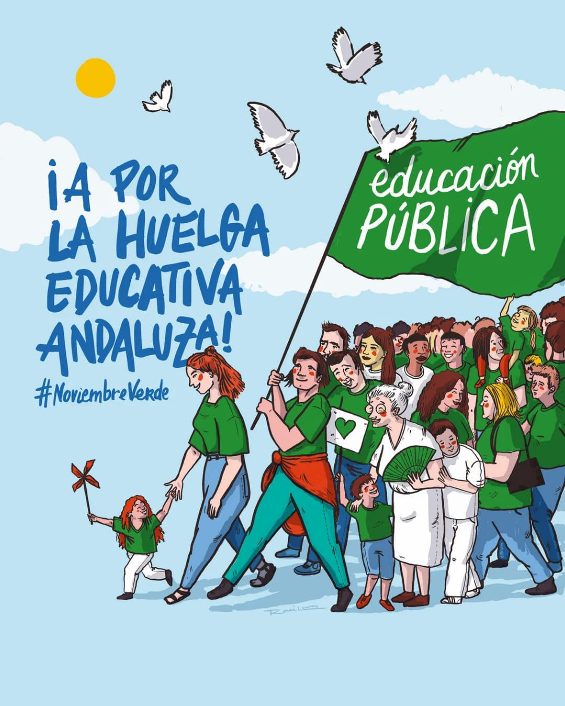

Quiénes somos
Somos una plataforma ciudadana y educativa que defiende una educación pública andaluza de calidad, inclusiva y con recursos suficientes. Estamos integrados por una amplia red de organizaciones de base del sector educativo —estudiantes, docentes, familias, trabajadores y trabajadoras—, sindicatos, colectivos sociales y organizaciones políticas comprometidas con la transformación de nuestro sistema educativo.
Nuestra fuerza reside en la diversidad de voces y la unidad de propósitos: garantizar que la educación pública sea la prioridad de la agenda política, social y económica de Andalucía.

Participa
Súmate a la plataforma difundiendo nuestras acciones y colaborando en las iniciativas que iremos organizando.
Canales de comunicación
Canal de difusión WhatsApp
Canal unidireccional para recibir información y noticias sobre la Asamblea Andaluza por la Educación Pública. Aquí recibes las últimas convocatorias, comunicados y actualizaciones de la plataforma.
Comunidad WhatsApp
Espacio de participación activa donde se discute, coordina y organiza el trabajo de la plataforma. La comunidad funciona con la siguiente estructura:
- Grupo de la Coordinadora - Formado por dos representantes de cada asociación u organización colectiva para la toma de decisiones. Para entrar en la coordinadora, escribe a asambleaandaluzaporlaeducacion@gmail.com
- Grupo General - Donde participan todos los miembros de la plataforma
- Comisiones de trabajo:
- Comisión de Acciones - Organiza asambleas, movilizaciones y actividades
- Comisión de Comunicación - Gestiona notas de prensa, redes sociales y estrategia de medios
- Comisión de Manifiesto - Redacta y modifica documentos, buscando consensos
- Comisión de Logística - Organiza espacios, materiales e inscripciones de eventos
- Grupos provinciales - Un grupo por cada provincia andaluza para organizar asambleas y acciones locales
Otros canales
- Instagram @asambleaandedupublica - Síguenos en redes sociales
- Email: asambleaandaluzaporlaeducacion@gmail.com
Próximas Asambleas
Asambleas y encuentros programados en las provincias andaluzas para principios de octubre de 2026:
| Día | Hora | Provincia | Localización |
|---|---|---|---|
| Martes 1 de octubre | 18:00 | Sevilla | Universidad de Sevilla - Facultad de Educación |
| Miércoles 2 de octubre | 17:30 | Málaga | Instituto de Educación Secundaria Mediterráneo |
| Jueves 3 de octubre | 19:00 | Córdoba | Colegio Público San José |
| Viernes 4 de octubre | 18:30 | Granada | Universidad de Granada - Campus de la Salud |
¿No hay asamblea en tu provincia? ¡Ponte en contacto con nosotros a través de nuestros canales de comunicación para organizar una!
Reivindicaciones
Nuestra lucha se articula en torno a demandas concretas para fortalecer la educación pública:
- Extensión de la educación pública a infantil de 0-3 años
- Reducción significativa de ratios en todas las etapas educativas
- Atención real a la diversidad e inclusión educativa
- Estabilización del personal interino en abuso de temporalidad
- Defensa de la formación profesional pública
- Cobertura de todas las vacantes en puestos no docentes
- Desburocratización de la educación
- Mejora de infraestructuras y adaptación climática
- Servicios complementarios y apoyo a las familias
- Educación pública plurilingüe de calidad
- Universidad 100% pública con financiación suficiente
- Dignificación profesional y mejora de condiciones laborales
- Fin de los conciertos educativos
Documentos
Materiales de trabajo de la Asamblea Andaluza por la Educación Pública:
- Manifiesto - Posicionamiento público de la plataforma
- Decálogo de reivindicaciones - Propuesta detallada de demandas
- Tabla de reivindicaciones - Síntesis de las demandas principales
Acciones
Asambleas Presenciales
I Asamblea Andaluza por la Educación Pública
Antequera, 18 de Julio de 2026
Primer encuentro de la plataforma para la coordinación y definición de estrategias de lucha.

II Asamblea Andaluza por la Educación Pública
Villanueva del Rosario, 26 de Septiembre de 2026
Segunda jornada de encuentro y coordinación de las organizaciones de la plataforma.

Asambleas Online
Asamblea online de coordinación (8 de Junio 2026)
Encuentro virtual de coordinación entre representantes de organizaciones para:
- Presentación de la plataforma y objetivos
- Definición de comisiones de trabajo (Comunicación, Logística, Cuidados y Seguridad)
- Intercambio de experiencias de otros territorios (Cataluña, Valencia, Madrid)
- Preparación de encuentros presenciales